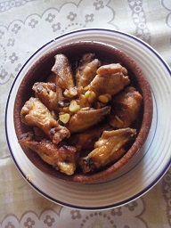

Alitas de pollo al ajillo

Ingredientes:
- 10 alitas de pollo
- Aceite
- Sal y pimienta
- 4 dientes de ajo laminados
- 1 vasito de ajo laminados
- 3 cucharadas de vinagre
Realización:
Freír las alas hasta que estén
doradas y reservar en ese aceite
se fríen los ajos cuando empiecen a
dorarse se aparta la sartén y se agrega
el vino con el vinagre se vuelve a poner
en el fuego se incorporan las alas. Y las
dejas dos o tres minutos más.